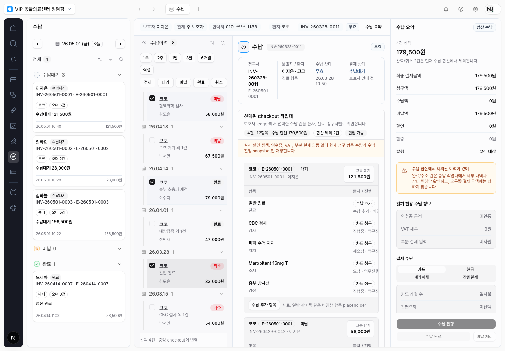
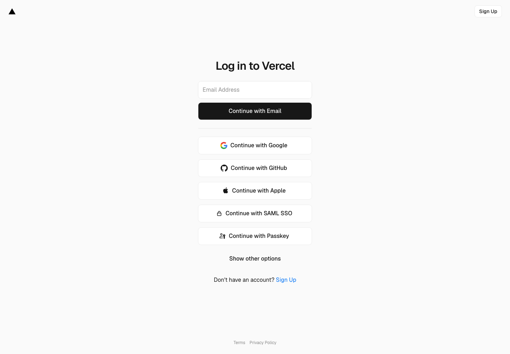
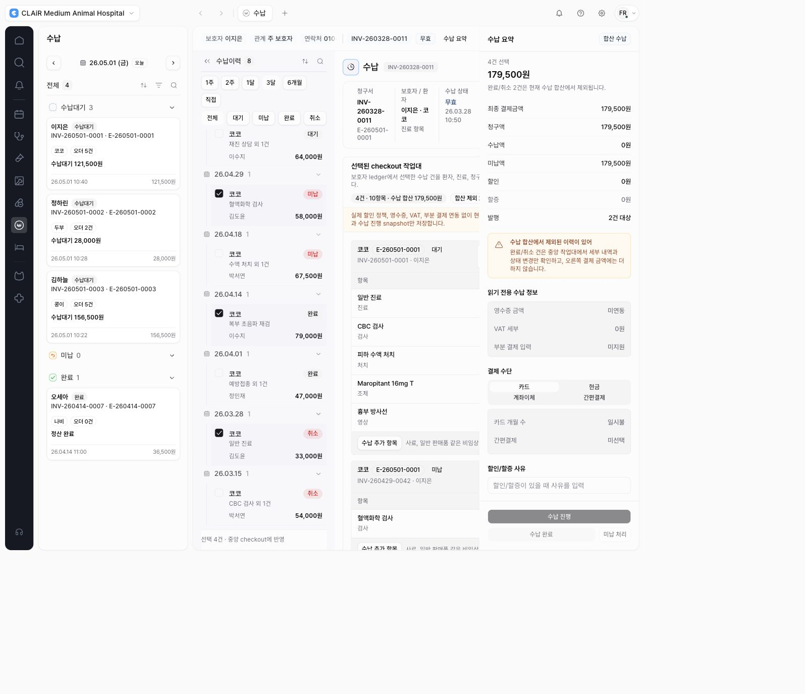

2026-06-01 · CLAiR EMR Billing Data Model & RPC Hardening · DEN-386
Guardian checkout UI-to-RPC 연결 결과
수납 화면이 새 guardian-checkout API/RPC 경로를 실제로 호출하도록 연결했다.
기존 mock/store 화면은 유지하되, 보호자 ledger 조회와 checkout 합산 금액은 API가 성공하면
server-backed 결과를 우선 사용한다.
결론
- 통과: 로컬 실제 수납 화면에서
guardian-checkoutGET과 POST가 200으로 호출됐다. - 통과: 수납대기 121,500원 + 미납 58,000원을 합산하고 완료 79,000원 + 취소 33,000원은 제외해 최종 결제금액 179,500원을 유지했다.
- 통과: 완료/취소 상태 변경 CTA와 우측 수납 완료/미납 CTA는 새 audited transition route를 먼저 시도하고, 실패 시 기존 mock/payment-status fallback을 보존한다.
- 제한: fixed staging 웹 화면은 여전히 Vercel Deployment Protection 접근이 필요하다. 이번 작업은 production deploy, real data import, remote DB 변경 없이 로컬 화면과 API 경로를 검증했다.
변경 범위
src/features/billing/module.tsx: guardian ledger GET, checkout prepare POST, status transition PATCH helper와 화면 연결을 추가했다.tests/billing-guardian-checkout-hardening-server.spec.ts: 실제 billing screen이guardian-checkoutroute를 호출하고 합산 제외 금액을 유지하는 Playwright regression을 추가했다.
검증
npx eslint src/features/billing/module.tsx tests/billing-guardian-checkout-hardening-server.spec.ts통과.npx tsc --noEmit --pretty false통과.PLAYWRIGHT_BASE_URL=http://127.0.0.1:3109 npx playwright test tests/billing-guardian-checkout-hardening-server.spec.ts --reporter=line통과: 8개.
화면 증거
로컬 실제 화면에서 미납, 완료, 취소 이력을 선택한 뒤 checkout 합산 제외 안내와 179,500원 최종 결제금액을 확인했다.

남은 게이트
fixed staging 화면까지 닫으려면 보호된 Vercel deployment에 접근 가능한 preview/share URL 또는 인증 세션이 필요하다. 그 전까지는 fixed staging DB/RPC replay 통과와 local actual screen UI-to-RPC 검증 통과를 분리해서 기록한다.
- 2026-06-01 추가 시도: 승욱이 fixed staging Vercel protected deployment preview/share access 생성을 승인한 뒤 다시 실행했지만, Vercel connector의 share URL 생성은
403 Forbidden으로 실패했다. - Playwright 직접 접근도 HTTP
401이후 Vercel login으로 redirect됐고, CLAiR 앱 로그인 화면에는 도달하지 못했다. 따라서 fixed staging screen replay는 여전히 Vercel 계정/토큰 권한 또는 수동 share URL이 필요하다.

Fixed staging browser session retry
- 접근 성공: 승욱이 열어둔 Vercel dashboard 로그인 세션을 사용하는 in-app browser에서는 fixed staging alias가 Vercel login을 통과했고 CLAiR 앱 로그인 화면에 도달했다.
- 화면 UX 확인: fixed staging 수납 화면에서 수납대기, 미납, 완료, 취소 이력 4건을 선택했고 최종 결제금액
179,500원, 완료/취소 2건 합산 제외 안내를 확인했다. - UI-to-RPC 미검증: 같은 fixed staging deployment에서
/api/workspaces/clair-demo/billing/guardian-checkout를 직접 열면404가 반환된다. 따라서 이 fixed staging deployment에는 아직 DEN-386의guardian-checkoutroute/UI 연결 코드가 배포되지 않은 상태로 판단한다. - 다음 fixed staging UI-to-RPC 검증에는 production이 아닌 staging/preview 배포 또는 fixed staging alias가 DEN-386 코드가 포함된 deployment를 가리키도록 하는 별도 승인이 필요하다.
